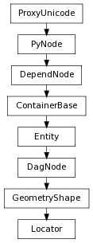

class counterpart of mel function spaceLocator
The command creates a locator at the specified position in space. By default it is created at (0,0,0).
If set, the locator’s position is in world space. Flag can have multiple arguments, passed either as a tuple or a list.
Derived from mel command maya.cmds.spaceLocator
Location in 3-dimensional space where locator is to be created.
Derived from mel command maya.cmds.spaceLocator
If set, the locator’s position is relative to its local space. The locator is created in relative mode by default.
Derived from mel command maya.cmds.spaceLocator
Location in 3-dimensional space where locator is to be created.
Derived from mel command maya.cmds.spaceLocator